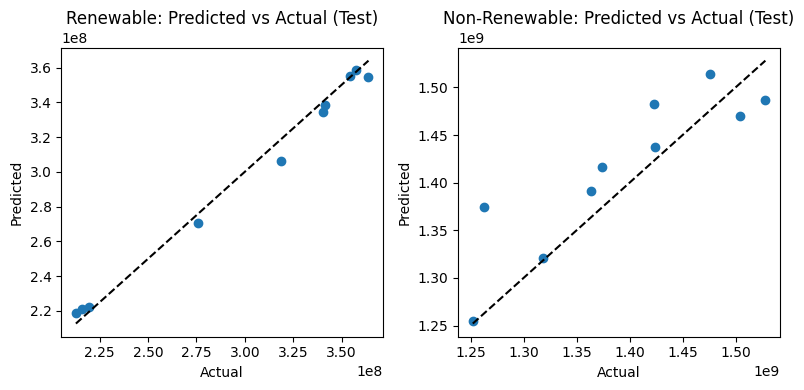
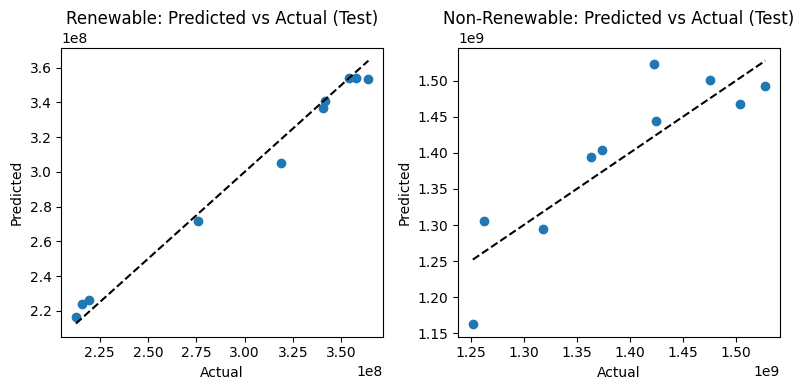
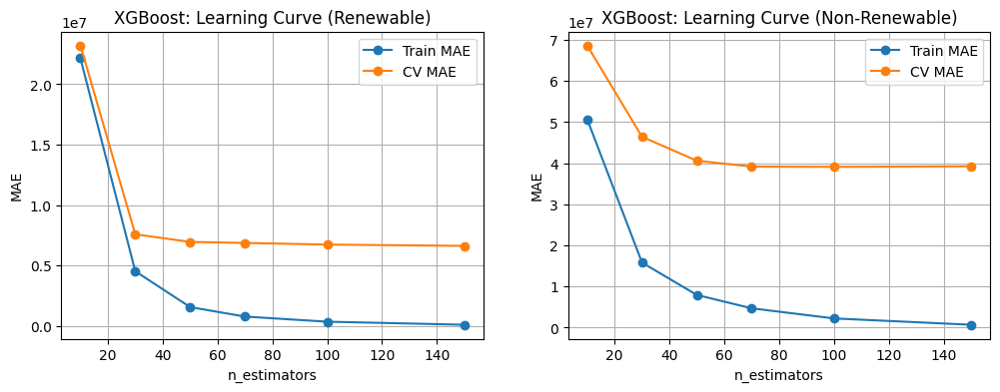

UK energy forecasting
MSc research comparing ARIMA, Random Forest and XGBoost — with a candid review of what the evidence supports.

The research question
Can statistical and machine-learning models describe UK energy demand and help explore future consumption? My MSc dissertation, “Predicting UK Renewable and Non-Renewable Energy Consumption Using Machine Learning”, studied 1970–2024 data and compared ARIMA, Random Forest and XGBoost.
This case study has two evidence streams: results transcribed from the recovered dissertation, and a separate reproducible historical sector analysis. The forecasting experiments have not been reproduced in this review.
Read the results with these caveats
The report contains unresolved inconsistencies. Forecasts are historical research outputs, not validated national energy projections.
- Period: the stated aim reaches 2030, but numerical tables cover 2025–2029. No 2030 value is supplied here.
- Units: source values are in ktoe; the report describes 1 toe = 11,630 kWh without establishing the thousands factor in the code. MAE, RMSE and forecasts retain the report’s labels, with a possible ×1,000 scale error unresolved.
- Targets: the report groups electricity and bioenergy/waste as “renewable”. The source consumption table does not establish renewable generation, so these are report-defined groups.
- Evaluation: ARIMA uses a described five-year test; tree models use roughly ten test years and shuffled K-fold validation. Identical chronological holdouts are not demonstrated.
- Conflicting outputs: forecast plots differ from tables, ARIMA summary prose differs from detailed metrics, and XGBoost renewable feature importances sum to 1.01. Conflicting forecast graphics and exact feature rankings are not used as evidence.
The detailed model tables are used consistently below. These discrepancies need the original notebook, split indices, transformed data and saved predictions to resolve.
Sources & preparation
The report describes DESNZ Energy Consumption in the UK annual data, World Bank GDP and population, and Met Office mean temperature and rainfall. Predictors were joined by year. Wide multi-level energy columns were reshaped into Year, Sector, Fuel and Value, with non-numeric entries treated as missing.
The report’s rainfall-source description mentions 2008–2020 despite the 1970–2024 study span. Exact year alignment and missing-data treatment need checking in the original pipeline. The separate repository keeps unavailable source cells and their references rather than assuming zero.
Three approaches to forecasting
| Model | Reported approach | What to watch |
|---|---|---|
| ARIMA | Separate ARIMA(2,1,2) models for each target | Uses target history; report describes a five-year evaluation |
| Random Forest | GridSearchCV; 100 trees, depth 8, minimum leaf 1 | Shuffled 5-fold KFold; chronological generalisation unproven |
| XGBoost | RandomizedSearchCV; 150 trees, depth 4, learning rate 0.1; subsample/column sample 0.8 | Tuning used renewable target as proxy; results need identical holdout comparison |
The tree models use GDP, population, annual temperature and rainfall. Future inputs are themselves projected: GDP/population average exponential-smoothing and ARIMA outputs; weather uses trends or smoothing with added variation. Energy forecasts are conditional on those input assumptions.
Reported model comparison
| Model | Target as labelled in report | MAE* | RMSE* | MAPE |
|---|---|---|---|---|
| ARIMA(2,1,2) | Renewable | 1.18 × 10⁷ | 1.23 × 10⁷ | 3.36% |
| ARIMA(2,1,2) | Non-renewable | 1.44 × 10⁸ | 1.45 × 10⁸ | 13.08% |
| Random Forest | Renewable | 5,514,513.38 | 6,884,494.48 | 1.98% |
| Random Forest | Non-renewable | 43,190,925.23 | 50,590,147.45 | 3.15% |
| XGBoost | Renewable | 5,295,334.87 | 6,261,134.00 | 1.84% |
| XGBoost | Non-renewable | 37,328,065.40 | 47,964,537.03 | 2.70% |
*MAE and RMSE are labelled kWh in the dissertation; the absolute scale remains unresolved. MAPE is dimensionless, but still depends on the target definition and evaluation split. These are transcribed results, not independently rerun experiments.
XGBoost has the lowest reported test MAE, RMSE and MAPE for both targets. Its reported renewable MAPE is 1.84%, versus 1.98% for Random Forest; non-renewable MAPE is 2.70%, versus 3.15%. The table does not support an “orders of magnitude” advantage over Random Forest.
Why might it help? Boosted trees iteratively fit residuals and can capture non-linear feature relationships. That is a plausible explanation for the reported improvement, not proof of causality or universal superiority. A common rolling-origin evaluation is needed before calling it the strongest future forecaster.

Inspect the original Random Forest diagnostics and XGBoost learning curve


Reported forecasts: 2025–2029
The following numbers are transcribed from each model’s forecast table, expressed on a common ×10⁸ scale solely for readability. R and NR mean the report-defined renewable and non-renewable groups. No recalculation, unit correction or experiment reproduction is implied.
| Year | ARIMA R | ARIMA NR | RF R | RF NR | XGB R | XGB NR |
|---|---|---|---|---|---|---|
| 2025 | 3.582753 | 11.41329 | 3.553437 | 11.34638 | 3.555638 | 11.54456 |
| 2026 | 3.593905 | 11.21071 | 3.559181 | 11.22184 | 3.559818 | 11.29525 |
| 2027 | 3.597458 | 11.30816 | 3.544033 | 11.16742 | 3.522626 | 11.31637 |
| 2028 | 3.592688 | 11.41368 | 3.545740 | 11.15790 | 3.531826 | 11.27360 |
| 2029 | 3.586763 | 11.22071 | 3.546094 | 11.13716 | 3.520588 | 11.31154 |
All three tables suggest broadly stable values for the report-defined renewable group. Random Forest’s non-renewable table declines gradually; ARIMA and XGBoost fluctuate. No prediction intervals are supplied, so these point estimates should not be interpreted as a credible range of future demand.
Why no original forecast plot here? The combined figure and the XGBoost historical/forecast figure show values that disagree with the tables, particularly non-renewable forecasts near 1.3–1.4 × 10⁹ versus table values near 1.13–1.15 × 10⁹. Reusing them without resolving that conflict would give readers contradictory results.
Separate historical findings
The reproducible repository uses Table C1 of the 2025 ECUK workbook, covering 55 consecutive years. It validates 1 ktoe = 0.01163 TWh, keeps the aggregate total separate from component sectors, and retains missing cells. This is descriptive sector analysis, not a reproduction of the dissertation models.
| Measure | Repository result |
|---|---|
| Final consumption, 1970–2024 | −12.3% |
| Final consumption, 2023–2024 | +2.6% |
| Transport share of 2024 final consumption | 42.2% |
| Maximum sector-sum rounding difference | 2 ktoe |
Research significance & next steps
The work shows how model comparison depends on more than the headline score: target definitions, unit consistency, data alignment, validation design and uncertain future inputs all affect the interpretation.
Recover the original code and prediction files, reconcile tables with figures, correct the energy-group definitions, and use identical chronological or rolling-origin holdouts with a naive baseline. Add uncertainty and scenarios for future predictors. These are proposed improvements, not completed research or policy outcomes.
Code & selected source record
Dissertation consistency review and table provenance · Transcribed reported results. Only selected analytical figures and results are included; the complete dissertation and its identifying front matter are withheld.
DESNZ ECUK 2025 · Government data under the Open Government Licence v3.0. Historical data are a fixed release, not a claim to use the latest edition.